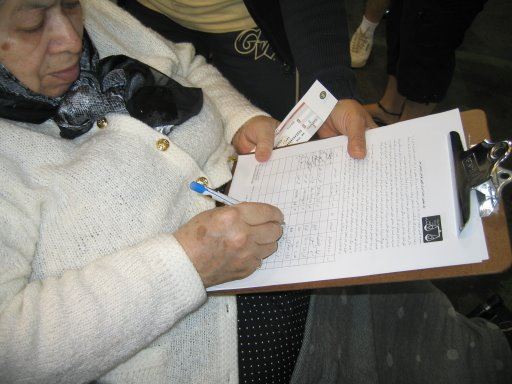

پذيرش > كوچه به كوچه > کمپین در جمع ایرانیان خارج از کشور/ روجا بندری


 کمپین در جمع ایرانیان خارج از کشور/ روجا بندری کمپین در جمع ایرانیان خارج از کشور/ روجا بندری
30 مهر 1386 - - نسخه قابل چاپ
نیپاک، انجمن ایرانیان ارنج کانتی، که یکی از فعال ترین گروه های فرهنگی اجتماعی ایرانیان در کالیفرنیاست در روزهای سیزده و چهارده اکتبر در جنوب کالیفرنیا هر ساله برنامه ای به نام جشن مهرگان برگزار می کند. در این برنامه دو روزه که در فضای باز برگزار می شود غرفه های مختلف از غرفه های فروش غذا تا غرفه های هنری ، غرفه های مربوط به استان های ایران، غرفه های فروش کتاب و مجلات، غرفه های موسسات مختلف مانند حمایت از سالمندان ایرانی، گروه های دانشجویان ایرانی و غیره وجود دارند. هر ساله حدود بیست هزار ایرانی در طی این دو روز در این برنامه شرکت می کنند.
کمپین یک میلیون امضا در مهرگان امسال غرفه ای از آن خود داشت و داوطلبان کمپین با بازدید کنندگان درباره کمپین و قوانین صحبت می کردند.
در کل، بسیاری دست ما را به گرمی فشردند. بسیاری گفتند خسته نباشید و خیلی ممنون که برای این کار وقت می گذارید. اکثریت قریب به اتفاق برگه ها را امضا کردند. بسیاری با اشتیاق دست دوستان، دختران، شوهران و مادرانشان را می کشیدند و به غرفه ما می آوردند تا آنها هم امضا کنند. بعضی از رادیو شنیده بودند که کمپین در مهرگان است و مستقیم به غرفه کمپین آمده بودند و می پرسیدند کجا را باید امضا کنیم؟ بعضی می گفتند اگر کمکی هست من حاضرم کمک کنم... ، بعضی عکس العمل ها مثبت بودند و بعضی منفی. در اینجا تعداد زیادی از منفی ها ذکر شده ولی باید گفته شود که اکثر مردم در گفت و گو ها موافق کمپین بودند. در کل شاید با هزار و سیصد نفر حرف زدیم و هزار و دویست تا امضا جمع کردیم. نوشته زیر خلاصه بعضی از این گفت و گو هاست:
یک سال و نیمه که دنبال طلاق دخترم در ایران هستم
خانمی می گفت دخترم چهل و نه سالشه و یک سال و نیمه می خواد از شوهرش طلاق بگیره. یک بچه پانزده ساله داره. نمیتونه طلاق بگیره. سه میلیون داده به یک وکیل و اون وکیل هنوز نتونسه طلاق بگیره هرچی مدرک می بره قبول نمی کنند و می گن کمه. دخترم به دادگاه گفته که آیا فقط اگر شوهرم من رو بکشه یا ناقص کنه برای شما کافیه؟
بچه ام را به پدربزرگش دادند
خانم دیگری می گفت من پزشک بودم همسرم هم پزشک بود و در جنگ شیمیایی شد. همسرم رو فرستادن خارج برای درمان ولی فرزندم رو نگه داشتند که ما حتما بعد از درمان شوهرم به کشور برگردیم. درمان ها فایده ای نکرد و شوهرم از دنیا رفت. حضانت بچه ام را به پدربزرگش دادند. فرزندم در انگلیس به دنیا آمده بود و تقریبا فارسی بلد نبود. از دو سالگی تا هفت سالگی همه چیزم رو گرفتند به بهانه این که حضانت بچه را به من بدهند ولی ندادند. من به دادگاه لاهه شکایت کردم ولی در نهایت هم تنها کاری که فایده کرد این بود که بچه ام را بردم به ده سبزوار (جایی که پدر بزرگش بود) و به فرزندم گفتم چنان بلایی سرشون بیار که نخواهند تو را نگه دارند. بعد از یک هفته بچه را برگرداندند تهران و حق سرپرستی را به من دادند.
خانه و بچه اش را از دست داد
آقایی می گفت که تازه از ایران آمده است. می گفت که دوستی در ایران داشته که با همسرش خیلی رابطه خوبی داشتند. هردو با کمک هم از صفر شروع کردند و یک کارخانه زدند و وضع مالی خوبی پیدا کردند. بعد از مدتی شوهر فوت می کند و پدر شوهر بچه شان را از زن می گیرد و زن را از خانه بیرون می کنند و تقریبا همه دارایی مشترک خانواده را هم از او می گیرند. الان این زن مانده است بدون بچه اش و بدون پولی که یک عمر برایش زحمت کشیده بود.
تو ایران این برگه ها رو دیدم ولی ترسیدم امضا کنم
این برگه های کمپین را در مهمانی ها می آوردند و امضا می گرفتند. من در ایران امضا نکردم چون قرار بود به خارج از کشور برویم و می ترسیدم که برایم مشکلی ایجاد کنند ولی اینجا امضا می کنم.
بعد از سی و پنج سال زندگی یک زن دیگر گرفت
خانم مسنی با قدی کوتاه و صورت پر چین و چروک ولی با انرژی و حرارتی ده برابر یک جوان بیانیه کمپین را خواند و امضا کرد. فکر می کنم شاید حدود هفتاد سال داشت. وقتی خواستم یک کپی از چند داستان کوچه به کوچه به او بدهم گفت "من خودم داستان زیاد دارم" از او پرسیدم که بیشتر توضیح دهد.
گفت "بعد از سی و پنج سال زندگی رفت یک زن دیگر گرفت. شصت سالش بود و رفت یک زن جوانتر گرفت. من معلم بودم و تمام عمرم پولی که از کار معلمی در آوردم خرج خانه ام کردم و در آخر یک تومان هم برای من چیزی نماند. از بچگی زندگی سختی داشتم. پدرم ارتشی بود و من رو به مردی که نمی شناختم زن داد. در خانواده ما باید جلوی مرد تعظیم می کردیم. بله قربان. شوهرم از من انتظار داشت که شام حاضر روی میز باشد و اگر غذا زیاد داغ بود آن را روی سرو صورتم می ریخت. از بچه هام بپرسید من با چه شدتی هر شب غذا را فوت می کردم تا نکند زیادی داغ باشد. این مرد بعد از سی و پنج سال یک زن دیگر گرفت. من هم با بچه هایم آمدیم به آمریکا. با هزار رنج و زحمت کار کردم. مدرک معلمی ام را اینجا قبول نمی کردند و من هر دوره و کلاسی که بود برداشتم. هم کار می کردم هم در این سن درس می خواندم ۲۵ واحد کلاس برداشته بودم تا بالاخره یک مدرک اینجا گرفتم. خرج بچه ها رو هم دادم و الان بچه هایم دکتر و مهندس هستند. دو سال پیش حکم طلاقم رو گرفتم. هیچی از پولهایی که با تدریس درآورده بودم هم برایم نماند. گفته که من گذاشتم از ایران رفتم ولی نگفته که از دست او ده تا مرض گرفتم" و دستهای باد کرده اش را به من نشان داد. " بیاید داستان من رو بنویسید من همه چیز رو براتون تعریف می کنم."
آنهایی که امضا نکردند:
منفی در منفی = مثبت
یکی می گفت که شما مگر فکر می کنید در آمریکا برابری هست؟ شما گول خوردید که فکر می کنید در آمریکا زن و مرد برابرند برای مثال تا حالا آمریکا یک رییس جمهور زن نداشته است.... بعضی تصور می کنند که نابرابری های کشورهایی مثل آمریکا دلیلی است برای توجیه کردن نابرابری در ایران. انگار که این دو منفی (که البته به هیچ عنوان به یک اندازه منفی نیستند) همدیگر را خنثی می کنند و به مثبت تبدیل می شوند.
باید رییس باشم
آقایی بیانیه را امضا کرد ولی نظرش این بود که در خانواده باید یک رییس وجود داشته باشه و این باید مرد باشه. و اگر تساوی قانونی به وجود بیاد خیلی وقتها بنیاد خانواده سست میشه و خانواده ها از هم می پاشند. در عین حال اگر این حقوق را به خانم ها بدهیم خیلی پس گرفتنش سخت خواهد بود.
همه رقاصند! به جز خودم!
یکی از داوطلب ها تعریف می کرد که به یک مهمانی رفته بود و درباره کمپین صحبت می کرد:
یکی به من گفت که شما که حالا این کار رو از لس آنجلس (!) شروع کردید!!! نمیدونید که این مردم که شما می خواهید امضاهایشان را بفرستید همه رقاص و کاباره برو هستند و شما می خواهید امضاهای اینها را جمع کنید و به مجلس ایران بفرستید. من هم از تعجب خشکم زده بود. ازش پرسیدم خودت کجا زندگی می کنی؟ گفتش من هم لس آنجلس زندگی می کنم ولی نه! من فرق می کنم!
سهمم را ازدو میلیارد دلار(!) پول جایزه نوبلش نداد
آقایی که دهانش بوی الکل خفیفی هم می داد اول به من اطلاع داد که یک میلیون امضا خیلی وقته که جمع شده است (این آقا با باد و افاده زیادی ادعا می کرد که اطلاعات دقیقی دارد). از من پرسید این حرکت رو چه کسانی حمایت می کنند. من هم گفتم خیلی از افراد شناخته شده جامعه این برگه را امضا کردند. مثلا سیمین بهبهانی، شیرین عبادی... هنوز جمله ام تمام نشده بود که گفت بابا شیرین عبادی که اصلا به اسم مردم ایران این جایزه نوبل رو برده و دو میلیارد دلار (!) پول جایزه اش رو تنهایی بالا کشیده و دخترش رو فرستاده لندن! می گفت در تظاهرات زنان حدود 600 نفر دستگیر شدند ولی این خانم عبادی فقط وکالت دو سه نفر رو قبول کرد و بقیه این زنها در زندان دارند می پوسند!
من حرصم رو قورت می دادم و به کارهایی که شیرین عبادی و امثال او برای مردم و کشور ما انجام می دهند فکر می کردم.
مامور جمهوری اسلامی هستید
کس دیگری می گفت اصلا خود شیرین عبادی مامور جمهوری اسلامیه. خانمی هم به امید می گفت شما با امضا جمع کردن دارید مشروعیت می دهید به جمهوری اسلامی و از امید خواهش می کرد و می گفت "تو رو خدا با من صداقت داشته باش! تو آیا مامور جمهوری اسلامی نیستی؟!
ارسال به
بالاترین
،
توییتر
،
فریندفید
،
فیسبوک
در همين بخش :
 روايت بيست و پنجمين شهريور / نرگس طیبات روايت بيست و پنجمين شهريور / نرگس طیبات
وقتی آتش خاموش شود/فرشته نوبخت
آن گاه که زن شدم / ویژه نامه 8 مارس 1391
چیزی زیر پوست این شهر می جوشد / دلارام علی
گرسنگی / وبلاگ سیب و سرگشتگی
ديگر بخش ها :
طرح یک میلیون امضا
|
مقالات
|
سایت نوشته ها
|
اخبار
|
گزارش كمپين
|
گفت و گو
|
علیه سکوت
|
كوچه به كوچه
|
نامه های شما
|
گزارش ویژه
|
گفتگو با اعضا
|
ویژه سالگرد کمپین
|
تصویر برابری
|
دل آرام علی
|
تریبون
|
مقالات
|
تاریخ شفاهی
|
خارج از چارچوب
|
کتابخانه
|
درباره کمپین
|
کمپین در شهرها
|
کمپین در بند
|
صدای تغییر
|
ویژه 22 خرداد
|
لایحه حمایت از خانواده
|
گالری
|
عشا مومنی
|
امیر یعقوبعلی
|
خدیجه مقدم
|
راحله عسگری زاده و نسیم خسروی
|
پروین اردلان،جلوه جواهری، مریم حسین خواه، ناهید کشاورز
|
زینب پیغمبرزاده
|
سعیده امین، سارا ایمانیان، محبوبه حسین زاده، ناهید کشاورز و همایون نامی
|
احترام شادفر
|
نسیم سرابندی زاده،فاطمه دهدشتی
|
وبلاگ مهمان
|
پرونده خرم آباد
|
دستگیری ها
|
مریم مالک
|
پرستو اللهیاری
|
مهرنوش اعتمادی
|
سمیه رشیدی
|
Other Languages
|
همراهان
|
«فراخوان کمپین ده روز با بهاره هدایت»
| English
|